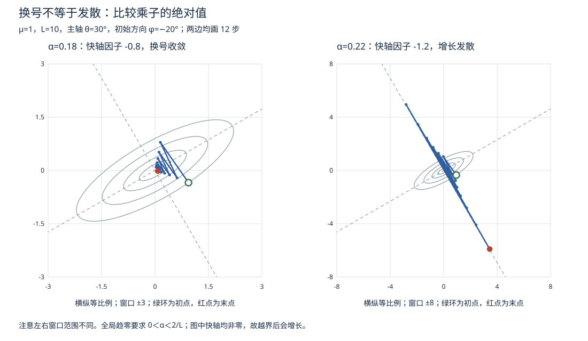

本页目录
优化 II · 无约束优化：从梯度下降到 Newton 法
无约束问题 \(\min_x f(x)\) 的算法全景。主线三问：往哪走（下降方向）、走多远（步长）、多快到（收敛速率）。收敛速率一节是本页核心——条件数给出一阶方法最重要的定量尺度，但不替代具体谱形、初始方向和步长的分析，也是理解深度学习各种优化器为何存在的理论底座。
学习层：同一个步长，为什么有人下山、有人原地打转？
1. 具体谜题：旋转的椭圆碗上，下一步到底会怎样？
把损失想成一个二维的椭圆碗。碗的两条主轴已经旋转了 \(30^\circ\)，沿一条轴的曲率是 \(\mu=1\)，沿另一条轴的曲率是 \(L=10\)。从单位圆上的
出发，只用固定步长梯度下降。现在只改学习率：
前者在陡轴上的一步因子是 \(1-0.18\times10=-0.8\)，后者是 \(1-0.22\times10=-1.2\)。你先猜：哪一种会在陡轴上变号？哪一种会把目标值降下来？哪一种最终会失控？ 注意，图上的坐标轴不是碗的主轴；只看 \(x_1,x_2\) 的左右摆动，很容易把“变号”误读成“发散”。
2. 先预测：在打开结果前写下三个判断
先不要点击“核对预测”，对当前预设写下：
- \(\alpha\) 是低于 \(1/L\)、介于 \(1/L\) 与 \(2/L\)，还是达到/越过 \(2/L\)？
- 在主轴坐标中，\(r_\mu=1-\alpha\mu\) 与 \(r_L=1-\alpha L\) 的符号和绝对值分别是什么？
- 你预测轨迹属于“收敛”“变号振荡但收敛”还是“发散/不收敛”？目标值、坐标分量和到原点的距离，哪一个才是本实验首先记账的量？
预测不是猜图形，而是先读两个一维因子：\(|r_i|<1\) 才会在第 \(i\) 个特征方向上衰减；\(r_i<0\) 只说明该模态交替换号。
3. 最小精确模型：把二维问题拆成两个一维因子
令 \(Q(\theta)\) 的列是旋转后的正交主轴，
其中 \(0<\mu\le L\)。实验只研究这个精确二维、对称正定二次型：
换到主轴坐标 \(z=Q^\mathsf T x\) 后，梯度下降
就是
这给出一张可逐行核对的稳定性账本：条件数 \(\kappa=L/\mu\)；对所有初始方向都稳定收敛的固定步长范围是
在通常的 \(L\)-光滑下降保证中，\(\alpha\le1/L\) 时目标值单调下降；当 \(1/L<\alpha<2/L\) 时，陡方向的因子可能为负，于是坐标/模态可以变号，但在这个精确二次 toy 中仍可收敛。\(\alpha>2/L\) 时含有 \(L\) 模态的分量发散；在边界 \(\alpha=2/L\)，该模态因子为 \(-1\)，严格说是等幅振荡而不是增长发散，但已经不收敛，所以实验把 \(\alpha\ge2/L\) 归入“发散/失稳”类。这里不要把“目标值单调”偷换成“每个坐标或欧氏距离都必须单调”；后者不是一般梯度下降定理的结论。
等距地比较固定步长时，最优常数步长为
右边是这个精确二次模型中误差二范数的最坏特征方向收缩因子；它不是每条轨迹、每个初始方向的实际步数承诺。
4. 可操作实验：先选判断，再揭开轨迹和账本
下面的实验固定 \(\mu=1\) 和单位长度初点，用 \(\kappa=L\) 决定另一条主轴曲率，并把步长改写成无量纲油门 \(\beta=\alpha L\)。先选预设，再调 \(\kappa\)、\(\beta\)、主轴旋转角、初始方向角和迭代次数，最后预测“收敛 / 换号收敛 / 发散”。核对前，轨迹、图表、指标和迭代表保持隐藏。
无 JavaScript 时的静态读法：初点长度为 \(1\)；\(\theta\) 是主轴旋转角，\(\varphi\) 是初始方向角。表中的“振荡”表示某个主轴因子变号但仍收敛；“发散”一栏把 \(\alpha=2/L\) 的边界不收敛也归入失稳类。
| 预设 | \(\kappa=L/\mu\) | \((\theta,\varphi)\) | \(\beta=\alpha L\) | 快轴乘子 \(1-\beta\) | 预测 |
|---|---|---|---|---|---|
| 良态 | \(4\) | \((35^\circ,20^\circ)\) | \(0.80\) | \(0.20\) | 不换号收敛 |
| 病态 | \(25\) | \((-35^\circ,25^\circ)\) | \(1.00\) | \(0\) | 快轴一步消失，慢轴很慢 |
| 保守 | \(10\) | \((25^\circ,40^\circ)\) | \(0.50\) | \(0.50\) | 不换号收敛 |
| 近极限 | \(10\) | \((28^\circ,-20^\circ)\) | \(1.85\) | \(-0.85\) | 换号但收敛 |
| 发散 | \(10\) | \((28^\circ,-20^\circ)\) | \(2.20\) | \(-1.20\) | 发散 |
实验的等高线使用同一个 \(H\)，蓝色轨迹在原坐标中走，虚线标出旋转后的两个特征方向；右图把 \(\|x_k\|_2/\|x_0\|_2\) 与 \(f(x_k)/f(x_0)\) 放到对数纵轴上。逐步账本会同时列出 \(x_k\)、主轴坐标 \(z_k\)、目标值和误差，便于定位“哪一个模态先出问题”。这只是一个精确 SPD 二次 toy；它不能替非凸函数宣称任意的鞍点、局部极小或发散行为。
5. 误区与边界：每一句保证都要带上条件
- “步长小于 \(2/L\) 就每个坐标都不变号”是错的。 只要 \(1/L<\alpha<2/L\)，\(L\) 模态因子就可能为负；变号本身不等于发散。
- “目标值下降，所以距离和坐标也下降”是错的。 目标值是加权二次能量；一般问题中坐标分量和到解的距离没有这样的普遍单调保证。本 toy 的特殊正交结构只能帮助我们精确计算，不能扩大定理范围。
- “\(\alpha=2/L\) 也算稳定”是错的。 边界的 \(L\) 模态等幅翻转，既不衰减也不收敛；严格的全局稳定收敛区间是开区间 \(0<\alpha<2/L\)。
- “条件数决定每一条轨迹”是错的。 \(\kappa\) 控制经典最坏情形尺度，但初始方向、实际谱形、步长和停止准则都会改变观察到的步数。
- “Newton 永远一步到位”是错的。 对本页的精确二次型，若 Hessian 和线性方程组都精确，Newton 确实一步到 \(x^*=0\)；一般非线性函数只在适当正则性和足够近的起点下才有局部二次收敛，而且 Hessian 不正定时方向还可能不是下降方向。
6. 迁移问题：模型变了，哪些结论要重写？
如果把 \(H\) 换成一个只“近似”已知的 Hessian，或把更新改成带动量的二阶递推，你会如何从特征方向重新写稳定多项式？如果 \(H\) 不再正定，\(f\) 可能有鞍点或无下界；此时“\(0<\alpha<2/L\) 就收敛到全局最小”还剩下哪一部分？请分别指出需要的凸性、光滑性、谱界和线性求解假设，而不要把这个二维椭圆碗的图像当作任意非凸地形的定理。
1. 最优性条件（回收数分 V）
一阶必要：\(\nabla f(x^*) = 0\)；二阶充分：\(\nabla f = 0\) 且 \(\nabla^2 f(x^*) \succ 0\) ⇒ 严格局部极小。凸问题中一阶条件即充要（优化 I）。算法的目标因此明确：找驻点（凸时即终点；非凸时接受"够好的"驻点——深度学习的现实立场）。
2. 下降法框架
步长 \(\alpha_k\) 的选法：精确线搜索（\(\min_\alpha f(x_k + \alpha d_k)\)，理论用）；Armijo 回溯（实用标准：从大步长起，不满足"充分下降" \(f(x_k + \alpha d) \leq f(x_k) + c\,\alpha \nabla f^\top d\) 就减半）；固定步长（深度学习的常态，代价是要调参——"学习率"之名由此而来）。
3. 梯度下降及其收敛速率（本页核心）

\(d_k = -\nabla f(x_k)\)（数分 V：最速下降方向）。收敛速率取决于函数的"弯曲程度"假设：
假设语言：\(L\)-光滑（梯度 Lipschitz：\(\|\nabla f(x) - \nabla f(y)\| \leq L\|x - y\|\)，曲率上界）；\(\mu\)-强凸（曲率下界，优化 I）。条件数 \(\kappa = L/\mu\)。
| 函数类 | 固定步长 \(\alpha = 1/L\) 的速率 | 达到 \(\varepsilon\) 精度需要 |
|---|---|---|
| \(L\)-光滑 + 凸 | \(f(x_k) - f^* \leq \dfrac{L\|x_0 - x^*\|^2}{2k}\) | \(O(1/\varepsilon)\) 步（次线性） |
| \(L\)-光滑 + \(\mu\)-强凸 | \(\|x_k - x^*\|^2 \leq \Big(1 - \dfrac{\mu}{L}\Big)^k \|x_0 - x^*\|^2\) | \(O(\kappa \ln\frac1\varepsilon)\) 步（线性收敛） |
强凸情形的证明骨架（两行）：由 \(L\)-光滑的下降引理 \(f(x_{k+1}) \leq f(x_k) - \frac{1}{2L}\|\nabla f\|^2\)，再用强凸的 PL 不等式 \(\|\nabla f\|^2 \geq 2\mu(f - f^*)\)，代入得 \(f(x_{k+1}) - f^* \leq (1 - \frac{\mu}{L})(f(x_k) - f^*)\)。
几何读法（比公式重要）：等高线是圆（\(\kappa = 1\)）且取 \(\alpha=1/L\) 时一步到底；等高线是细长椭圆（\(\kappa\) 大）时，梯度方向常偏离指向圆心的方向，轨迹可能在谷壁间锯齿。对表中 \(\alpha=1/L\) 的标准强凸上界，达到给定精度的迭代数按 \(O(\kappa\log(1/\varepsilon))\) 缩放；具体轨迹仍取决于谱、步长与初始方向。
🔗 AI 衔接：在标准光滑强凸模型中，适当的加速梯度法可把复杂度对 \(\kappa\) 的依赖由 \(\kappa\) 改善到 \(\sqrt\kappa\)。RMSProp/Adam 的逐坐标缩放有预条件直觉，但在一般非凸随机问题上，不能据此自动推出条件数变小或训练更快；SGD 则用有噪但更便宜的梯度估计替代全梯度（ai 课 04 讲）。
4. Newton 法：用曲率导航
对二阶 Taylor（数分 V）\(f(x_k + d) \approx f + \nabla f^\top d + \frac12 d^\top H d\) 求极小，得
优点：二次收敛（好起点附近误差平方级坍缩：\(\|x_{k+1} - x^*\| \leq C\|x_k - x^*\|^2\)，有效数字每步翻倍）；仿射不变（不怕病态坐标——它自带"把椭圆变回圆"的预条件，\(\kappa\) 对它不构成障碍）。
代价：每步要 Hessian（\(O(n^2)\) 存储）并解线性方程组（\(O(n^3)\)）——\(n\) 上百万（深度学习）时不可行；非凸区域 \(H\) 不正定时方向可能不下降（需修正）。
拟 Newton（BFGS）：不算 Hessian，用相邻两步的梯度差逐步拼出它的近似 \(B_k\)（割线条件 \(B_{k+1}(x_{k+1} - x_k) = \nabla f_{k+1} - \nabla f_k\)——一维割线法的多维版），秩二修正保正定。L-BFGS（只存最近 \(m\) 步、\(O(mn)\) 内存）是经典机器学习（逻辑回归、CRF）时代的主力优化器，至今仍是中等规模光滑问题的首选。
共轭梯度（CG）一嘴：专解二次型/线性方程组 \(Ax = b\) 的迭代法，\(n\) 步理论精确、每步只需矩阵乘向量——大规模稀疏问题之王（🔗 数值分析页详述；Newton 法内层的方程组常用它解，得"截断 Newton"）。
5. 方法选型速查
| 规模与性质 | 首选 |
|---|---|
| 小规模、光滑、要高精度 | Newton（或信赖域版本） |
| 中等规模、光滑 | L-BFGS |
| 大规模、目标是和式 \(\sum_i f_i\)（机器学习） | SGD 系（Adam 起手） |
| 不可微（L1、hinge） | 次梯度法 / 近端梯度（略超本科，知其名） |
6. 典型例题
例 1（条件数体感） \(f = \frac12(x_1^2 + 100 x_2^2)\)（\(\kappa = 100\)），从 \((100, 1)\) 出发做精确线搜索梯度下降：迭代点在两条"谷壁"间锯齿弹跳，误差每步乘 \(\big(\frac{\kappa-1}{\kappa+1}\big)^2 \approx 0.96\)——要 100+ 步；Newton 法一步到 \((0,0)\)（二次函数的 Hessian 恒定，一步精确）。这个 \(2\) 维小例子浓缩了本页全部要义，值得手算一轮。
例 2（求解全流程） \(\min f = x_1^2 + 2x_2^2 - 2x_1x_2 - 4x_2\)。 解：\(\nabla f = (2x_1 - 2x_2,\ 4x_2 - 2x_1 - 4)^\top = 0\) ⇒ \(x^* = (2, 2)\)；Hessian \(\begin{pmatrix} 2 & -2 \\ -2 & 4\end{pmatrix}\) 顺序主子式 \(2, 4 > 0\) 正定 ⇒ 全局极小（凸 + 驻点）。
例 3（Armijo 的必要性） \(f(x) = x^2\)，固定步长 \(\alpha = 1.1 > 2/L = 1\)：\(x_{k+1} = x_k(1 - 2.2) = -1.2 x_k\)——发散震荡。步长上限 \(2/L\) 不是装饰；"学习率过大导致损失爆炸"的最小数学模型就是它。\(\blacksquare\)
下一页：给优化加上约束——Lagrange 对偶与 KKT 条件，SVM 对偶的老家。